Manuel d'utilisation — Créez des cartes thématiques de France et du monde à partir d'un simple fichier CSV.
100% gratuit · sans inscription · fonctionne hors-ligneSimpleCarto est un générateur de cartes thématiques (cartes choroplèthes) qui fonctionne entièrement dans votre navigateur. À partir d'un fichier de données au format CSV, il colore automatiquement une carte — communes, départements, régions, EPCI de France ou pays du monde — selon les valeurs de vos données, puis vous permet de personnaliser son style avant de l'exporter en image.
Aucune inscription n'est nécessaire et aucune donnée n'est envoyée vers un serveur : tout le calcul et le dessin de la carte se font localement, dans votre navigateur. L'application peut aussi être installée pour être utilisée sans connexion Internet.
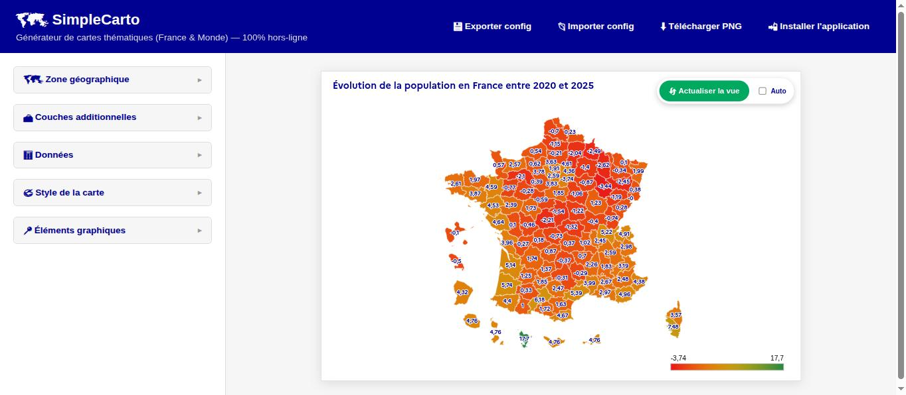
L'interface se compose de deux zones : à gauche, un panneau de réglages organisé en sections repliables (Zone géographique, Couches additionnelles, Données, Style de la carte, Éléments graphiques) ; à droite, l'aperçu de la carte, avec un bouton Actualiser la vue pour appliquer vos modifications et une option Auto pour les appliquer automatiquement à chaque changement.
Astuce : activez la case Auto en haut de l'aperçu pour que la carte se régénère automatiquement à chaque réglage, sans avoir à cliquer sur « Actualiser la vue ».
Le menu Échelle, dans la section « 🗺️ Zone géographique », propose sept niveaux :
| Échelle | Description |
|---|---|
| Monde | Carte des pays du monde, avec plusieurs projections thématiques et un cadrage par grande région. |
| France métropolitaine | Carte des départements de la France métropolitaine. |
| Région (FR) | Carte des départements d'une région choisie. |
| Région — détail communes (FR) | Carte de toutes les communes d'une région choisie, avec les limites départementales en trait plus épais. Vos données doivent alors être au niveau commune (code INSEE à 5 caractères). |
| Département (FR) | Carte des communes d'un département choisi. |
| EPCI (FR) | Carte des communes d'un établissement public de coopération intercommunale. |
| Commune (FR) | Zoom sur une commune précise. |
Pour les échelles région, département, EPCI et commune, des menus en cascade apparaissent pour affiner la zone (région → département → EPCI/commune).
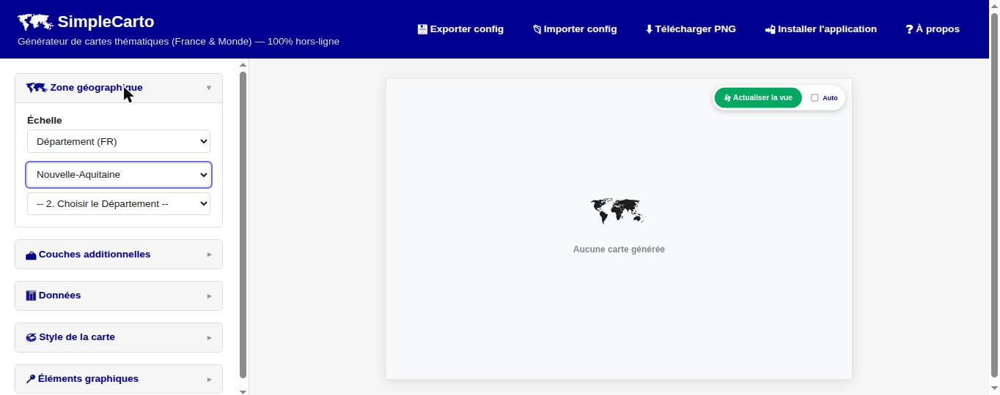
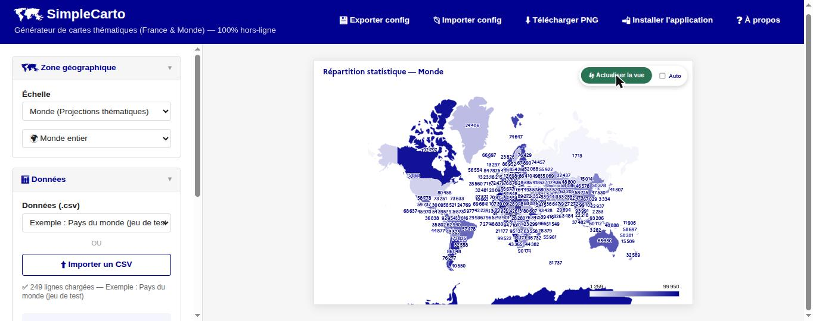
Dans la section « 📊 Données », deux possibilités : charger l'un des trois jeux d'exemple fournis (communes, départements, ou pays du monde), ou importer votre propre fichier CSV via le bouton « ⬆️ Importer un CSV ».
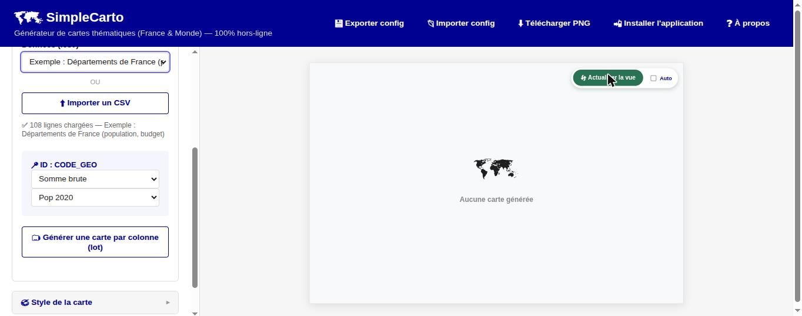
Nouveau : à chaque chargement d'un nouveau jeu de données (exemple ou import), SimpleCarto repasse automatiquement en mode Somme brute avec la palette bleue par défaut, pour repartir d'un affichage neutre plutôt que de conserver les réglages du fichier précédent.
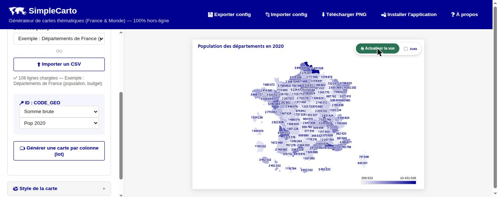
Une fois les données chargées, le menu situé sous l'identifiant permet de choisir comment les valeurs sont calculées :
| Mode | Calcul |
|---|---|
| Somme brute | Additionne les valeurs de la colonne choisie (agrégées automatiquement si l'échelle est plus large que les données, par ex. communes → départements). |
| Part (%) | Exprime chaque valeur en pourcentage du total de la colonne. |
| Ratio (C1/C2) | Divise la colonne C1 par la colonne C2 (par ex. un montant par habitant). |
| Évo (C1/C2) | Calcule l'évolution en pourcentage entre la colonne C1 (valeur de départ) et C2 (valeur d'arrivée). |
Les modes « Ratio » et « Évolution » affichent un second sélecteur de colonne (C2).
Le champ Titre accepte plusieurs lignes (touche Entrée pour un retour à la ligne manuel). Sa police et sa taille sont réglables indépendamment de celles des étiquettes.
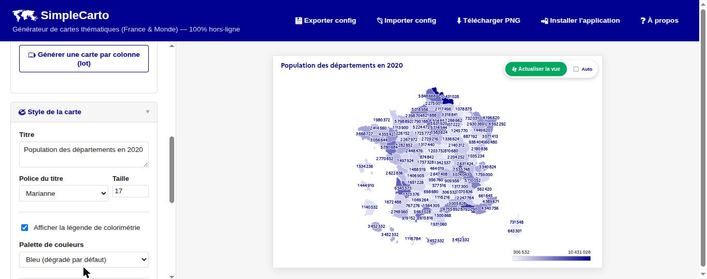
Quatre options sont proposées : la palette bleue par défaut (dégradé unique, appliquée automatiquement à chaque nouveau jeu de données), deux palettes divergentes fixes (vert → jaune → rouge, ou l'inverse, utiles pour distinguer valeurs faibles et fortes), et une palette manuelle entièrement personnalisable.
La palette manuelle propose une couleur de départ (valeurs basses), une couleur d'arrivée (valeurs hautes), et optionnellement une couleur pivot (valeurs médianes) à activer via la case « Ajouter une couleur pivot ». Un aperçu du dégradé s'affiche en temps réel.
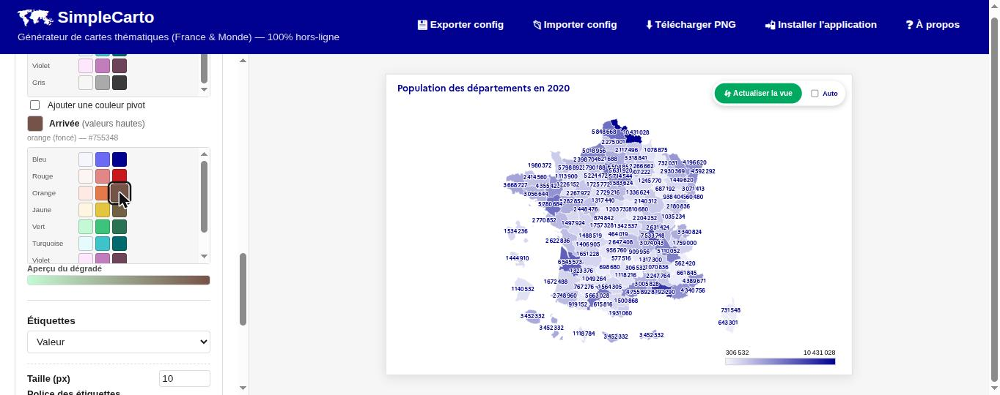
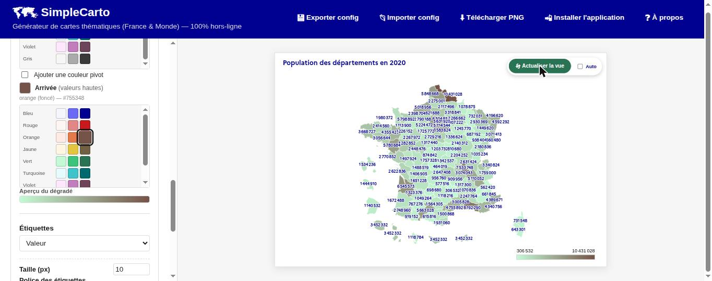
Le menu Étiquettes permet d'afficher le nom des zones, leur valeur, les deux, ou aucune étiquette. Lorsqu'une option est active, un panneau complémentaire apparaît :
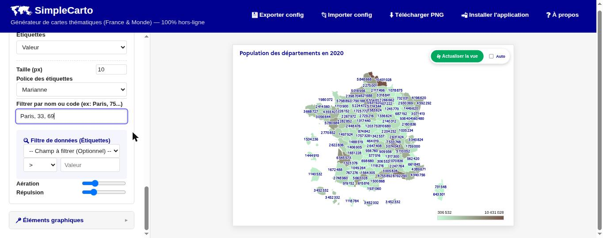
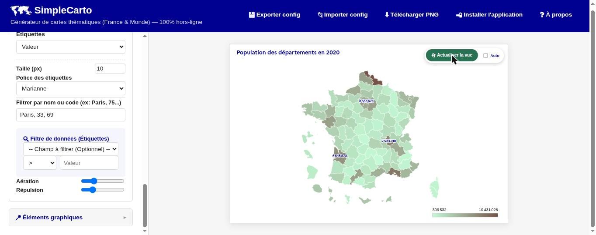
Disponible pour les échelles françaises (national, région, département, EPCI, commune), la section « 🏔️ Couches additionnelles » permet de superposer à votre carte thématique :
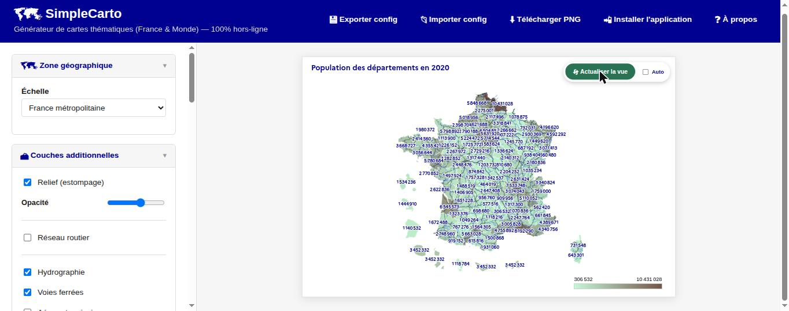
La section « 📍 Éléments graphiques » permet d'enrichir la carte de deux façons :
Choisissez un jeu de pictogrammes (humanitaire OCHA ou pictogrammes DSFR de l'État), un symbole, sa couleur et sa taille, puis cliquez sur « 📍 Placer ce pictogramme » avant de cliquer sur la carte pour le positionner. Cliquer sur un pictogramme déjà placé le supprime.
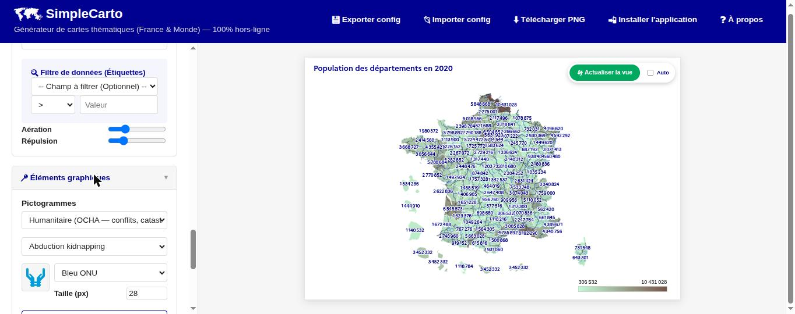
Le bouton « 💬 Ajouter une bulle » crée une bulle de texte à positionner sur la carte d'un clic. Une fois placée, glissez sa poignée (⠿) pour la déplacer, cliquez sur ⚙ pour choisir sa police, sa taille et ses couleurs, ou sur × pour la supprimer. La flèche qui relie la bulle à son point d'ancrage peut être courbée en ajustant sa poignée.
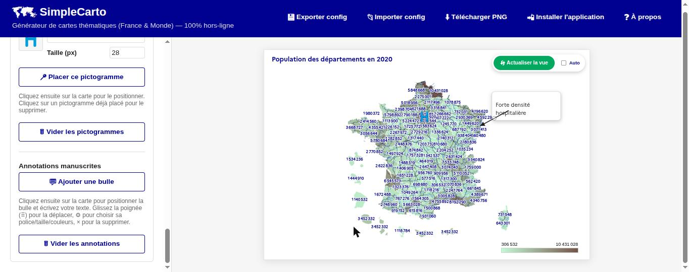
La section « 📌 Épingles » place des points de couleur à partir de coordonnées GPS. Contrairement aux pictogrammes, les épingles sont attachées à leurs coordonnées : elles restent au bon endroit quelle que soit l'échelle choisie et apparaissent dans l'export PNG et la génération par lot.
x,y,couleur,légende, où x est la longitude et y la latitude. Le séparateur peut être , ou ; (dans ce cas la virgule décimale est acceptée), la ligne d'en-tête est facultative, et la couleur s'écrit en hexadécimal (#e1000f) ou en toutes lettres en anglais (red, blue...). Les lignes aux coordonnées invalides sont ignorées et signalées.La légende de chaque épingle peut s'afficher à côté du point, et un encadré en bas à gauche regroupe les couples couleur / légende des épingles visibles. Les deux affichages, ainsi que la taille du point, se règlent dans la même section. La liste des épingles permet d'en supprimer une (×) ou de toutes les effacer.
Lorsqu'un fichier CSV importé contient plusieurs colonnes de données, le bouton « 🗂️ Générer une carte par colonne (lot) » apparaît dans la section « 📊 Données ». Il automatise la création d'une série de cartes :
<en-tête de colonne>.png.Seuls le mode de calcul et le titre sont remplacés pour chaque carte du lot : la palette de couleurs, les étiquettes, les couches additionnelles, les pictogrammes et les annotations actuellement réglés dans le panneau sont conservés et appliqués à toutes les cartes générées. Pensez donc à régler le style souhaité avant de lancer le mode lot.
Le panneau et l'aperçu affichés à l'écran ne sont pas modifiés par cette opération : le mode lot travaille en arrière-plan et restitue l'aperçu tel qu'il était avant son lancement.
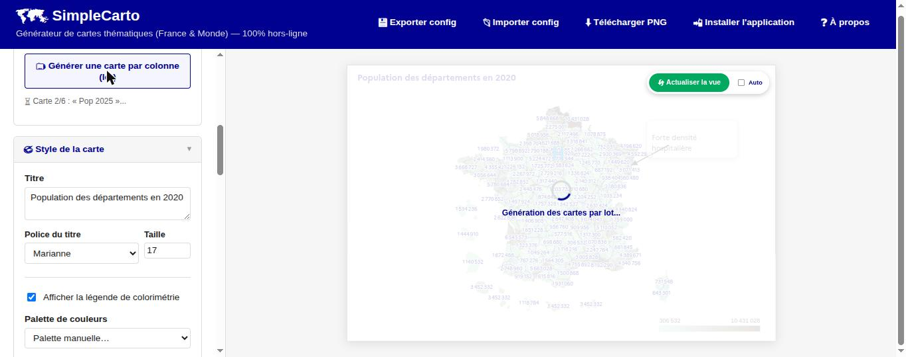
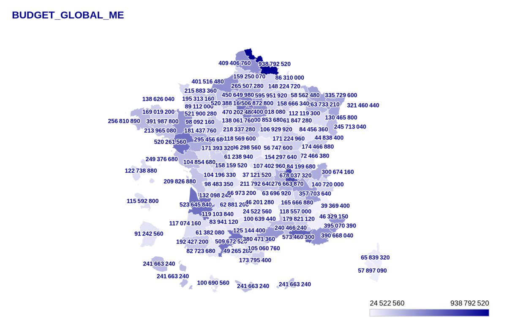
Les boutons d'export se trouvent en haut à droite de l'écran :
| Bouton | Action |
|---|---|
| 💾 Exporter config | Télécharge un fichier .json contenant vos données et tous vos réglages, pour reprendre le travail plus tard. |
| 📂 Importer config | Recharge un fichier de configuration précédemment exporté. |
| ⬇️ Télécharger PNG | Génère et télécharge la carte actuellement affichée en image haute définition. |
L'image PNG téléchargée reprend le titre de la carte comme nom de fichier.
Le bouton « 📲 Installer l'application » (visible selon votre navigateur) installe SimpleCarto comme une application autonome, utilisable sans connexion Internet une fois installée.
Ce manuel est disponible à tout moment depuis le bouton « ❓ À propos » de l'en-tête. Il ouvre une fenêtre présentant SimpleCarto et proposant son téléchargement au format PDF.
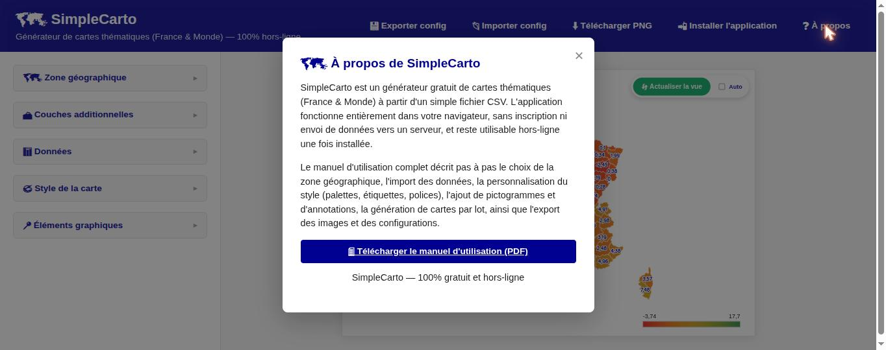
Vérifiez que la première colonne de votre CSV contient bien des codes géographiques reconnus (codes commune INSEE, codes département, ou codes pays ISO alpha-3 selon l'échelle choisie), et que la zone géographique choisie (région, département...) correspond à vos données. Cliquez sur « Actualiser la vue » après tout changement si le mode « Auto » n'est pas activé.
Les décimales séparées par une virgule (format français, ex : 1234,56) sont acceptées
automatiquement.
Oui : utilisez « 💾 Exporter config » pour sauvegarder vos données et réglages dans un fichier, puis « 📂 Importer config » pour les recharger — y compris sur un autre appareil.
Non. Le traitement des fichiers CSV et le dessin des cartes se font entièrement dans votre navigateur ; aucune donnée n'est transmise à un serveur.